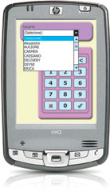

Noticias
25/06/2007
Cheff Administra é lançado durante a 23ª Fispal Food Service em São Paulo. O sistema permite a gestão administrativa integrada de um estabelecimento ou de toda uma rede de restaurantes própria ou flanqueada.
Parceiros
- HP Invent
- Intel
- Microsoft
- Vanrooy
- Software Express
A Solução móvel do novo milênio para a indústria gastronômica
Sistema totalmente computadorizado, que permite o controle do registro de todo o consumo do local, de forma ágil e simples.
Suas três modalidades de atendimento (mesas/cartão individual simultâneo, balcão e delivery) possibilitam a utilização em qualquer tipo de estabelecimento gastrônomico.
A tecnologia wireless e o uso de comandas eletrônicas permitem fazer o pedido ao lado do cliente e elimina a viagem do garçom até a produção.
O resultado imediato é a disponibilidade total para a tarefa mais importante, o bom atendimento.
- Aumento da produtividade
- Agilidade e qualidade no serviço ao cliente
- Maior rotação de mesas
- Controle e organização
- Baixo custo de capacitação
- Redução significativa de funcionários
Benefícios
Velocidade no atendimento
Assim que o garçom confirma o pedido, ele é enviado automaticamente para a impressora de produção (bar, cozinha etc). O tempo de resposta à solicitação de fechamento das contas também é extremamente reduzido, satisfazendo os clientes e liberando rapidamente a mesa.
Características
- Configuração simples do cardápio, no qual você mesmo define as cores
- Consulta sobre a situação das contas de qualquer lugar do estabelecimento, a qualquer momento
- Acesso a operações gerenciais, descontos, transferências, de produtos e mesas, visualização e emissão de pré-contas
- Dispõe de diversos níveis de acesso, todos com códigos de autorização
Administração
Apoio total para o seu negócio
Características gerais
- Histórico de vendas por data
- Operação por mouse e teclado
- Homologado para as necessidades fiscais vigentes ECF,TEF (discado e dedicado) Sintegra
- Impressão remota de pedidos na produção
- Controle de caixa diário e por período
- Conta corrente de clientes e gerenciamento de cartão fidelidade
- Preços múltiplos por produto
- Modificadores de produtos por preço e quantidade
- Mapa de mesas fornece os estados de ocupada, livre, sobremesa, etc, permitindo uma visão geral do restaurante
Relatórios
O Pocket Cheff possui uma série de relatórios gerenciais, incluindo um poderoso recurso para elaboração de relatórios “customizados”
- Ranking de produtos por unidade vendida, valor e descrição
- Vendas por grupo de produto e por vendedor
- Estatísticas de permanência, valor médio de consumo por mesa e por vendedor
- Relatórios de vendas por garçom, comissões e repiques
- Detalhe de tipos de recebimento por caixa
- Vendas por dia da semana e por dia do mês
- Vendas por períodos ou por hora
Funcionabilidade
O garçom não precisa de conhecimentos de informática, basta tocar a tela do Pocket PC com a caneta.
Interface
A sua funcionabilidade é de fácil entendimento, descartando qualquer tipo de conhecimento na área de informática.
Acesso através de senhas
Todos os operadores são identificados no sistema.
Módulos
Adapta-se a diversas estruturas de restaurantes, permitindo trabalhar em diferentes modalidades utilizando dispositivos como balanças, leitores de código de barras, toch screen Pocket PC
Pocket Cheff Touch: Ferramenta ideal para agilizar o atendimento no bar e para venda-balcão fast-food. Funciona como terminal de lançamento de pedidos, com monitores sensíveis ao toque. (touch screen).
Pocket Cheff Balança: Indicado para restaurantes por quilo, o módulo permite a transferência do peso das balanças digitais.
Pocket Cheff Recepção: Consulta on-line do estado do restaurante. O mapa das mesas permite visualizar as mesas que estão livres e ocupadas. Os desenhos indicam o estado da mesa: comida, sobremesa, conta, número de pessoas, valor consumido, etc.
Pocket Cheff Web Reports: Consulta e emissão de relatórios via Internet. No fechamento do período o sistema de frente da loja atualiza o banco de dados na web. Permite acesso remoto às estatísticas diversas e relatórios gerenciais com total segurança
Pocket Cheff Administra: Poderosa ferramenta de gestão comercial (ERP) multi loja totalmente integrada, possibilitando todos os controles administrativos financeiros. Controle de estoque, compras, contas a pagar/receber, bancos etc